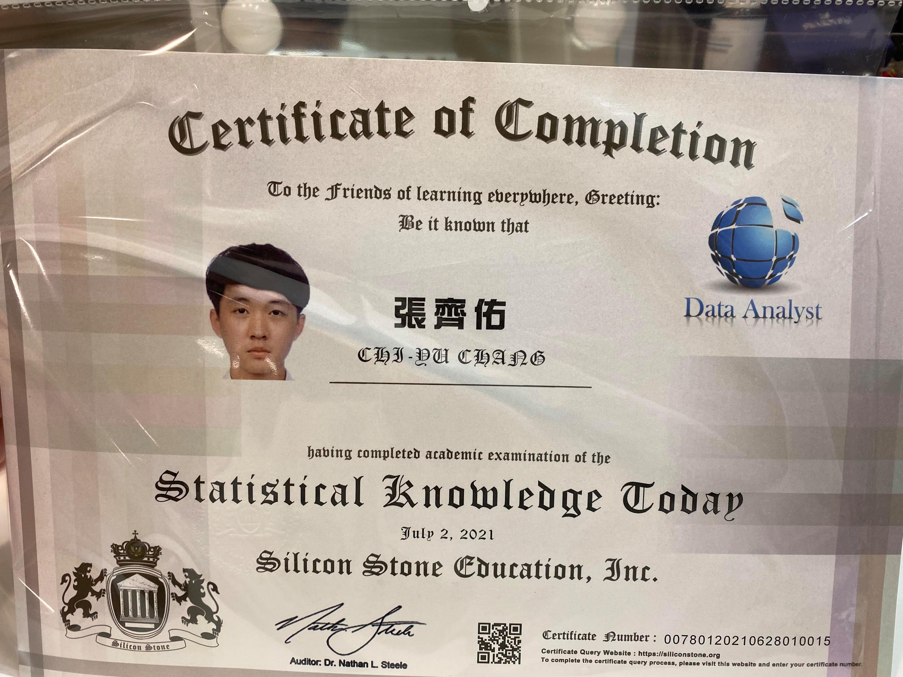

忍一時風平浪靜，退一步海闊天空
學歷
證照
Statistical Knowledge Today
Database Administration Fundamentals
功課表
| 日 | 一 | 二 | 三 | 四 | 五 | 六 | |
|---|---|---|---|---|---|---|---|
| 第一節 | 進階程式設計 | ||||||
| 第二節 | 資訊管理導論 | 進階程式設計 | 雲端概論 | 專題研究 | |||
| 第三節 | 資訊管理導論 | 當代文化 | 網頁設計 | 雲端概論 | 專題研究 | ||
| 第四節 | 資訊管理導論 | 當代文化 | 網頁設計 | 雲端概論 | 專題研究 | ||
| 第五節 | 進階程式設計 | 專案管理 | 網頁設計 | ||||
| 第六節 | 進階程式設計 | 專案管理 | 網頁設計 | ||||
| 第七節 | 專案管理 | ||||||
| 第八節 |